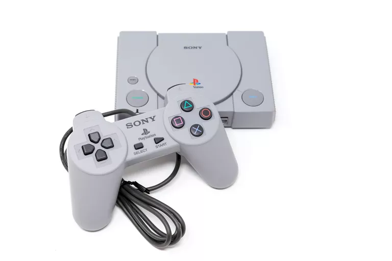

Aug 7
The birth of the Playstation
By Mary Bellis
| Date | Milestone | Location |
|---|---|---|
| 1988 | Sony working with Nintendo | Japan |
| 1991 | Modified Version of the Super Disk | Nevada |
| 1994 | PlayStation X (PSX) is released | Japan |

The Sony PlayStation was the first video game console to sell over 100 million units. So how did Sony Interactive
Entertainment manage to score a home run on its first foray into the video game market?
The history of the PlayStation begins in 1988 as Sony and Nintendo were working together to develop the Super Disc.
Nintendo was dominating computer gaming at that time. Sony had not yet entered the home video game market,
but they were eager to make a move. By teaming with the market leader, they believed they had a good chance for success.
The Super Disc was going to be a CD-ROM attachment intended as part of Nintendo's soon to be released Super Nintendo game.
However, Sony and Nintendo parted ways business-wise as Nintendo decided to use Philips as a partner instead.
The Super Disc was never introduced or used by Nintendo.
In 1991, Sony introduced a modified version of the Super Disk as part of their new game console: the Sony PlayStation.
Research and development for the PlayStation had begun in 1990 and was headed by Sony engineer Ken Kutaragi.
It was unveiled at the Consumer Electronics Show in 1991, but the next day Nintendo announced they were going to use Philips instead.
Kutaragi would be tasked with further developing the PlayStation to beat Nintendo.
Only 200 models of the first PlayStation (that could play Super Nintendo game cartridges) were ever manufactured by Sony.
The original PlayStation was designed as a multi-media and multi-purpose entertainment unit. Besides being able to play Super
Nintendo games, the PlayStation could play audio CDs and could read CDs with computer and video information.
However, these prototypes were scrapped.